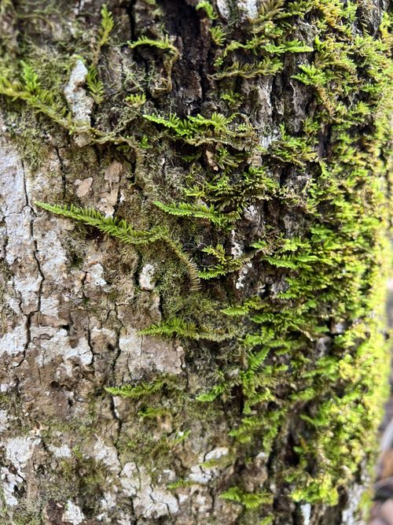

Theliaceae
Thelia Moss Family (associated with genus Thelia)
Theliaceae is a small family of pleurocarpous mosses containing two main genera, Thelia and Myurella. They are characterized by forming dense mats with numerous short, crowded, erect or ascending branches that are often smoothly cylindrical (julaceous). Their leaves are small, concave, broadly ovate, and feature papillose cells and often ciliate margins (Thelia) or crenulate margins (Myurella). They typically grow on tree bases, rocks, or calcareous soil, primarily in North America and other Holarctic regions.
Overview
The Theliaceae family comprises a small group of distinctive mosses known for their unique growth habit. While technically pleurocarpous (with creeping primary stems), they produce numerous, short, crowded, upright secondary branches that give the appearance of dense turfs or intricate mats. These branches are often julaceous – smooth and cylindrical because the small, concave leaves are tightly appressed.
The family includes two principal genera: Thelia, primarily found in eastern North America on tree bases, and Myurella, which has a broader Holarctic distribution (North America, Europe, Asia) and often favors calcareous rocks or soil. Key diagnostic features include the julaceous branches, small concave leaves with papillose cells, and specific marginal characteristics (cilia in Thelia, crenulations in Myurella). Their phylogenetic position is somewhat debated, traditionally placed in Leucodontales but often linked to Hypnales or Leskeales by molecular data.
Quick Facts
- Scientific Name: Theliaceae
- Common Name: Thelia Moss Family (mainly for Thelia)
- Number of Genera: 2 (Thelia, Myurella)
- Number of Species: Approximately 5-6
- Distribution: North America (Thelia), Holarctic (Myurella)
- Evolutionary Group: Bryophytes - Mosses (Class Bryopsida, Order: Hypnales / Leucodontales - placement debated, Habit: Pleurocarpous with erect branches)
Key Characteristics
Growth Form and Habit
Plants are pleurocarpous but form dense mats or low turfs due to numerous, crowded, short (usually <1 cm), erect or ascending secondary branches arising from creeping primary stems. Secondary branches are often unbranched or sparsely branched and typically julaceous (smoothly cylindrical due to tightly appressed leaves). Thelia commonly grows on the bases of deciduous trees (especially hardwoods like oaks), while Myurella prefers calcareous rock crevices or soil.
Leaves
Leaves are small, densely arranged, and tightly imbricate (overlapping), especially when dry, contributing to the julaceous appearance of branches. They are typically broadly ovate to orbicular (almost round), strongly concave. The apex is usually abruptly narrowed to an apiculus or a short, sometimes reflexed acumen. Margins are distinctive: often strongly ciliate (fringed with multicellular hairs) in Thelia, or finely denticulate to crenulate (scalloped) in Myurella. The costa is usually faint, single and short (ending mid-leaf or below), or sometimes absent. Laminal cells are typically small, rhombic to hexagonal, thick-walled, and characteristically papillose, with one or several small papillae per cell, or sometimes prorate (papillae projecting from cell ends). Alar cells are generally indistinct or weakly differentiated.
Gametangia and Sporophytes
Sporophytes arise laterally from stems, often near the base of the erect branches. Plants are typically dioicous.
- Seta: Elongate, slender, smooth, usually yellowish to reddish-brown.
- Capsule: Erect and symmetric, ovoid to cylindrical, smooth. The operculum is usually conic to short-rostrate.
- Peristome: Distinctly double, but often reduced (leucodontoid type).
- Exostome: 16 lanceolate teeth, pale, usually papillose, sometimes fragile.
- Endostome: Typically consists of a low or absent basal membrane, with segments that are narrow, linear, sometimes rudimentary or adhering to the exostome teeth. Cilia are absent.
- Calyptra: Cucullate (hood-shaped), smooth or sometimes hairy (in Thelia), covering the operculum.
Spores
Spores are typically small, spherical, and finely papillose.
Field Identification
Identifying Theliaceae relies on recognizing the unique growth form with crowded, julaceous branches, combined with the small, concave, papillose leaves and specific marginal features.
Primary Identification Features
- Growth Habit: Dense mats with short, crowded, erect/ascending, often julaceous secondary branches.
- Small, Concave Leaves: Leaves are tiny, broadly ovate/orbicular, and cup-shaped, tightly appressed to branches.
- Papillose Leaf Cells: Surface of leaves appears dull or rough under a hand lens due to papillae (confirmation requires microscope).
- Leaf Margins: Check for cilia (hairs) along the margins (Thelia) or fine teeth/scalloping (Myurella).
- Habitat: Characteristic substrates - tree bases (Thelia) or calcareous rock/soil (Myurella).
Secondary Identification Features
- Short/Absent Costa: Midrib is weak or not visible.
- Erect, Symmetric Capsules: If present, capsules stand straight up on stalks.
- Geographic Location: Primarily North America or Holarctic.
Seasonal Identification Tips
- Gametophyte: The distinctive mats and julaceous branches are visible year-round.
- Sporophytes: Capsules on stalks are produced seasonally and, being erect, can be conspicuous when present.
Common Confusion Points
- Anomodontaceae (e.g., Anomodon): Similar habitats (tree bases, rocks) and sometimes papillose cells, but typically have more robust, less julaceous branches, different leaf shapes (often lingulate), and stronger costae.
- Leskeaceae (e.g., Leskea): Often form dull, intricate mats in similar habitats, but usually have ovate-lanceolate leaves (not orbicular), often stronger costae, and different papillae structure.
- Amblystegiaceae: Some small species grow in mats, but usually in wetter habitats, with non-papillose cells and different leaf shapes.
- Leucodontaceae (e.g., Leucodon): Can have julaceous branches but are typically larger, have smooth leaf cells, and different peristome structure.
Field Guide Quick Reference
Look For:
- Dense mats with short, erect, julaceous branches
- Small, broad, concave leaves
- Papillose leaf cells (dull look)
- Ciliate margins (Thelia)
- Crenulate margins (Myurella)
- Short/absent costa
- Habitat: Tree bases or calcareous rock/soil
- Erect capsules (if present)
Key Variations:
- Presence/absence of cilia vs. crenulations
- Branch density and length
- Presence/abundance of sporophytes
- Substrate type
Notable Examples
The family primarily consists of the genera Thelia and Myurella.

Thelia Sull.
(Genus; species include T. hirtella, T. asprella, T. lescurii)
Characterized by its julaceous branches and broadly ovate, concave leaves with strongly ciliate margins and papillose cells. Commonly found forming dense, often glaucous-green mats on the bases of hardwood trees in eastern North America.

Myurella Schimp.
(Genus; species include M. julacea, M. sibirica)
Distinguished by its very slender, julaceous branches and tiny, concave, almost circular leaves with crenulate or denticulate margins (lacking cilia) and papillose cells. Typically found in calcareous habitats (rock crevices, soil) across Holarctic regions.
Phylogeny and Classification
The phylogenetic placement of Theliaceae is complex and has been subject to debate. Traditionally, based on morphological features like the reduced double peristome (leucodontoid type) and epiphytic habit of Thelia, it was often placed in the order Leucodontales.
However, molecular phylogenetic studies frequently place Theliaceae within or near the large order Hypnales, often close to families like Leskeaceae or Anomodontaceae. The combination of pleurocarpous growth (suggesting Hypnales) with a reduced peristome (more typical of Leucodontales) makes its position challenging to resolve definitively. It represents a lineage with a unique mix of characteristics.
Position in Plant Phylogeny
- Kingdom: Plantae
- Division: Bryophyta (Mosses)
- Class: Bryopsida
- Subclass: Bryidae
- Superorder: Hypnanae (if placed near Hypnales/Leskeales)
- Order: Hypnales / Leucodontales / Leskeales (Placement uncertain)
- Family: Theliaceae
Evolutionary Significance
Theliaceae is evolutionarily interesting due to:
- Specialized Morphology: The development of julaceous branches, highly concave leaves, papillose cells, and marginal cilia/crenulations represents adaptation to specific microhabitats, likely related to water retention and protection.
- Habitat Specificity: The preference of Thelia for tree bases and Myurella for calcareous substrates highlights niche partitioning.
- Phylogenetic Ambiguity: The family exemplifies the challenges in reconciling morphological and molecular data in bryophyte systematics, particularly concerning the evolution of peristome structure in pleurocarpous mosses.
- Biogeography: The distinct distributions of Thelia (mainly E North America) and Myurella (Holarctic) provide insights into historical plant movements and diversification.